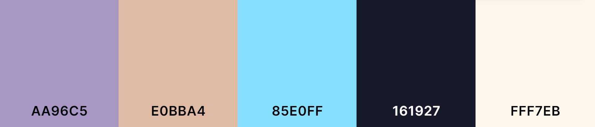
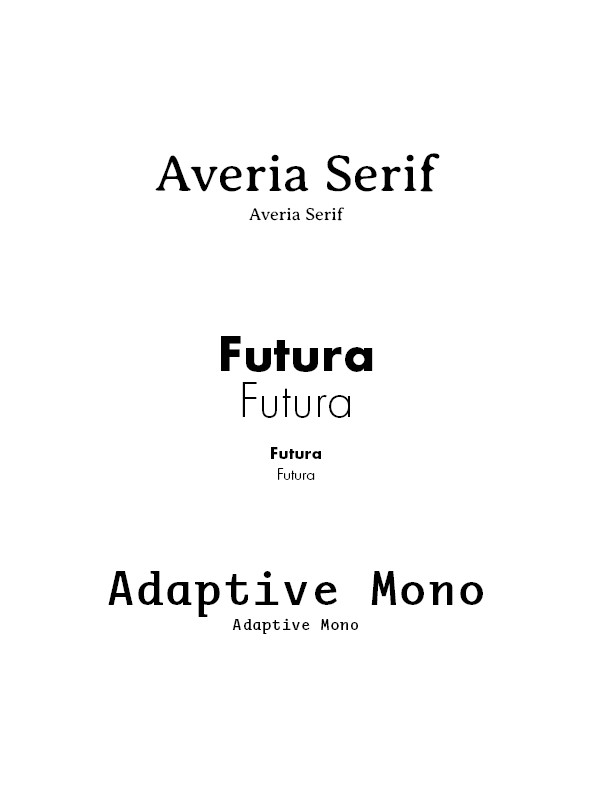
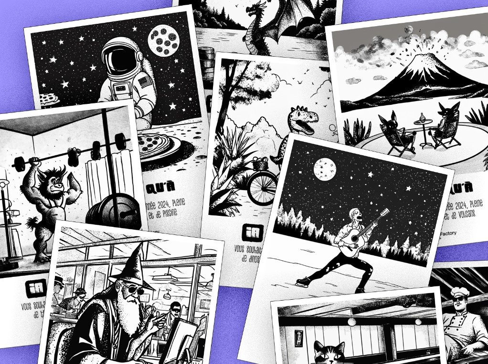
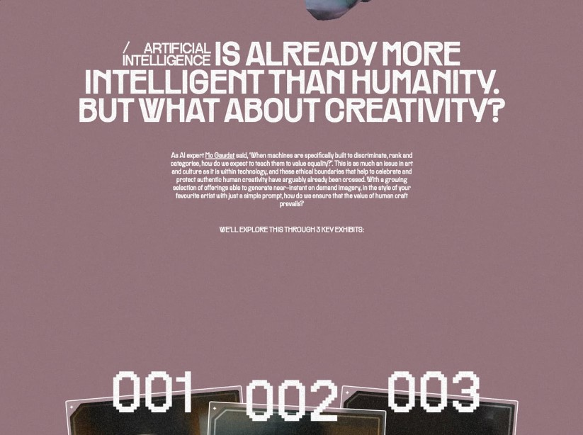
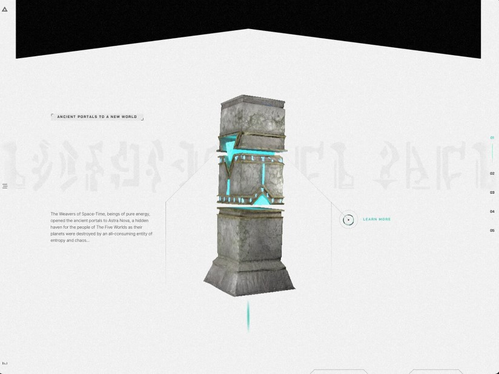
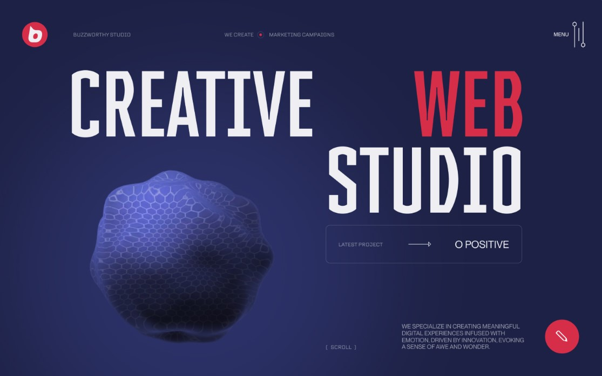
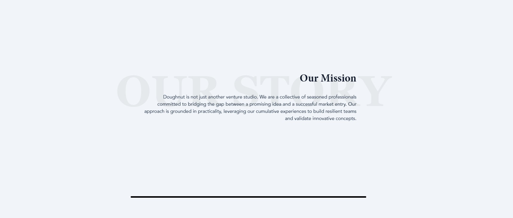
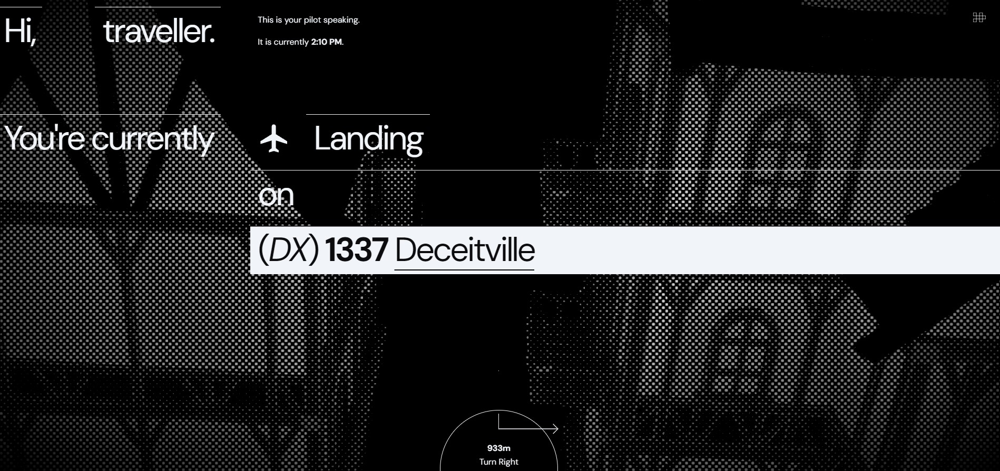

Example Color Palette

Possible Typefaces

Individual card layout design, drawn illustration style, narrative-implying visual style

Clean layout and simple color palette, simpler card interactivity possibilities

Complex visual focus that could serve a stronger narrative purpose, small detail oriented layout, good contrast between the visual focus and the surrounding design

Good color palette, bold and clear text hierarchy, direct UI design

Interactivity and animations while scrolling is well inegrated, makes use of a simpler design

Great interactivity with the scroll of the site and clickable elements, interesting texture and black white color palette enhances the animation of the background